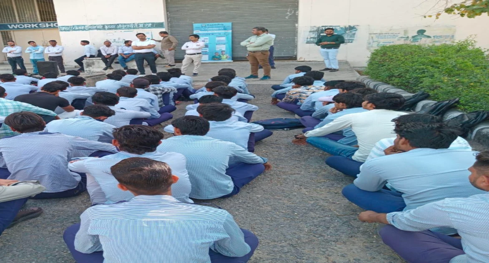
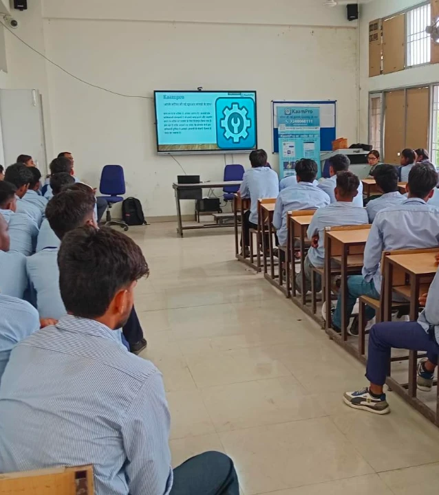
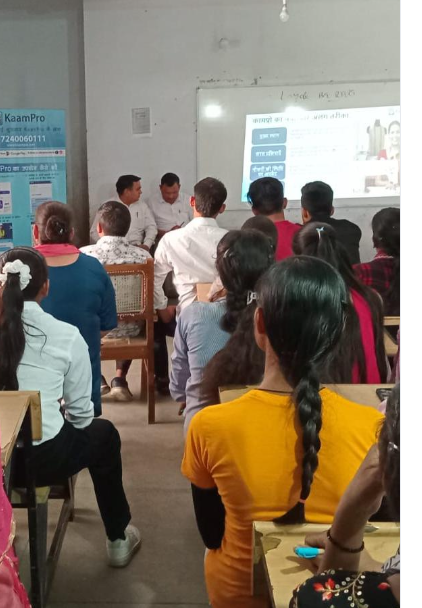
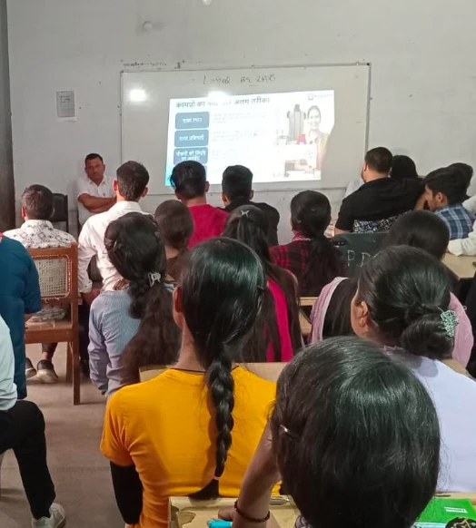
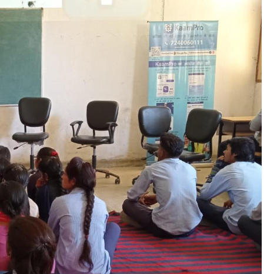
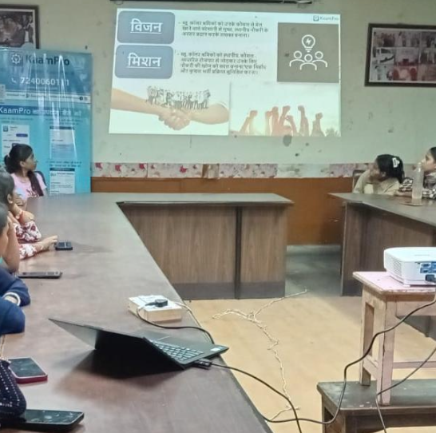
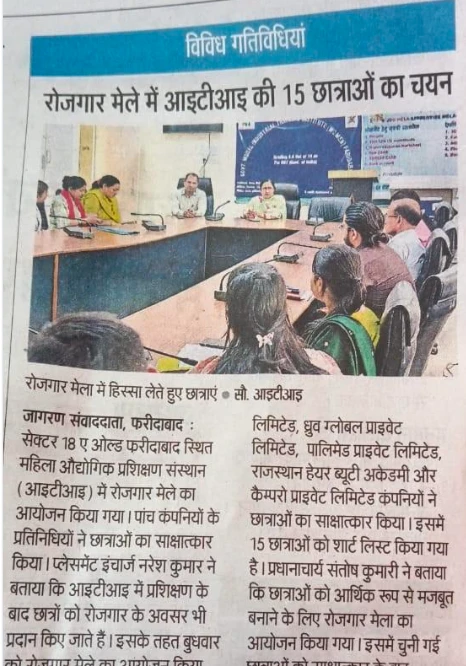
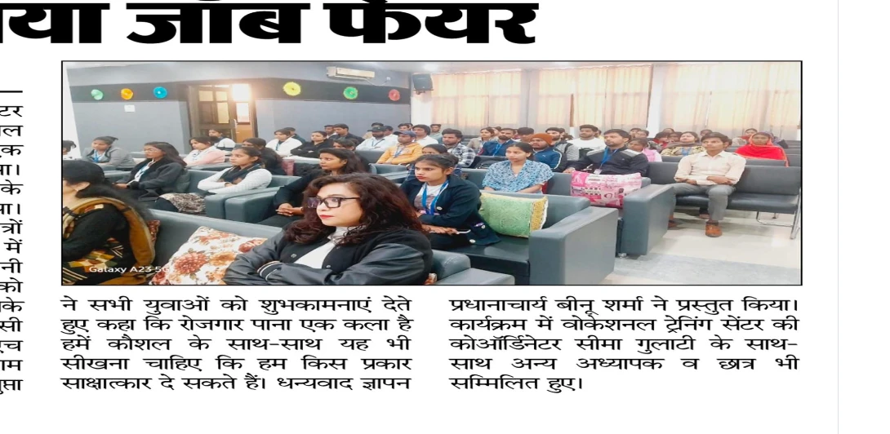

KaamPro
An AI hiring platform for India's blue-collar workers, in regional languages, that helps people find work and stay in it.
- Reach
- 56,000+ jobseekers · 11 states · 24 employers
- Outreach
- 29 Industrial Training Institutes (ITIs) · 68 rural communities
- Recognition
- IIM-A Ventures Top 6 · UN Global Innovation Challenge finalist · Conrad Innovator Award
- Also
- Government of Rajasthan · Top 100 Emerging Innovators of the Year

An outreach session at an Industrial Training Institute workshop.
The problem
In 2023 I kept seeing workers waiting outside factory gates for hours with folders of documents, hoping for a vacancy. Many travelled between factories without knowing if anyone was hiring, and others paid middlemen a share of their wages. Applications were long and often in a language they didn't read comfortably.
What KaamPro does
KaamPro connects workers directly with verified employers. Workers create one profile in their own language and apply simply, without a middleman. Employer verification and child-labour screening were part of it from the start.
Outreach
Most of the workers I wanted to reach weren't going to find an app on their own. I contacted factories directly, ran sessions in Hindi through 29 Industrial Training Institute partners and 68 rural communities, and helped workers register in person.





Impact
KaamPro has reached 56,000+ jobseekers across 11 states and works with 24 employers. In the hiring we tracked, the time to find a job fell from about 9–10 days to under five. Local newspapers covered job fairs where KaamPro interviewed and shortlisted Industrial Training Institute trainees.


KaamPro 2.0
A worker once told me about being dismissed again and again, each time just before completing twelve months of employment. That conversation made me look beyond the job search to what happens after someone is hired. KaamPro 2.0 is an AI-assisted hiring and workforce platform built around that question. Retention is up 36%.
AI voice interviews
Structured interviews in regional languages, so workers speak instead of filling in forms. Recruiters receive a summary.
Matching
Considers practical fit such as commute, wages and shifts, not only skills.
Retention
Follows each hire over time and uses AI to understand why people leave.
Worker protection
Labour-law alerts, age checks and safeguards against biased screening.
Recruiters make every final hiring decision.
Timeline
- 2023Founded KaamPro; first employers and Industrial Training Institute partners.
- Growth56,000+ jobseekers across 11 states; recognised by the Government of Rajasthan.
- RecognitionUN Global Innovation Challenge finalist · Conrad Innovator Award · Top 100 Emerging Innovators of the Year.
- NowBuilding KaamPro 2.0. IIM-A Ventures finalist (Top 6), investment pitch in November 2026.
Reflection
When I started, I tracked how many workers registered. Now I pay more attention to whether they find suitable work, stay in it and get the chance to progress. Many of KaamPro's biggest changes came from conversations with workers and employers.